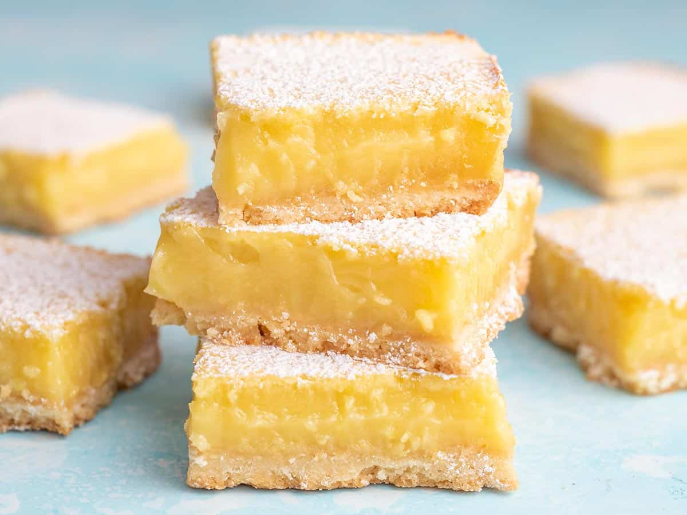

These shortbread crust lemon bars are one of my favorite cookies of all time — although technically, they're closer to a pie than a cookie.
Nothing prepares you for that intense, awesome sweet and tart lemon-flavored custard, perfectly contrasted against crisp, sweet, buttery shortbread cookie.
Ingredients
Shortbread Crust:
- 1 cup all-purpose flour
- 1/2 cup unsalted butter at room temperature
- 1/4 cup confectioners' sugar
- 1/4 teaspoon vanilla extract
- 1/4 teaspoon salt
Lemon Custard:
- 2 large eggs
- 1 large egg yolks
- 1 cup white sugar
- 2 tablespoons all purpose-flour
- 1/4 cup freshly squeezed lemon juice
- 1 tablespoon freshly grated lemon zest
Garnish:
- 1 teaspooon confectioners' sugar, or to taste
Instructions
- Set an oven rack to the middle position and preheat the oven to 350 degrees F (175 degrees C).
Lightly grease an 8x8-inch baking dish.
- Make crust: Use the back of a spatula or wooden spoon to mash flour and butter in a large bowl until thoroughly combined.
Mix in confectioners' sugar, vanilla, and salt until mixture resembles slightly crumbly cookie dough.
Moisten your fingers with a little water and press dough into the bottom of the prepared baking dish.
Use a fork to prick holes all over crust.
- Bake on the middle rack in the preheated oven until edges are barely golden brown, about 22 minutes. Set aside.
- Make custard: Beat together eggs and egg yolks in a medium bowl until combined.
Whisk in white sugar and flour until smooth.
Add lemon juice and zest; whisk for 2 minutes. Pour over warm crust.
- Bake on the center rack until custard is set and the top has a thin white sugary crust, about 25 minutes.
Let cool completely before cutting into bars.
- Dip a knife into very hot water, then run the blade around the edges and cut into 16 squares.
Dust bars with confectioners' sugar.